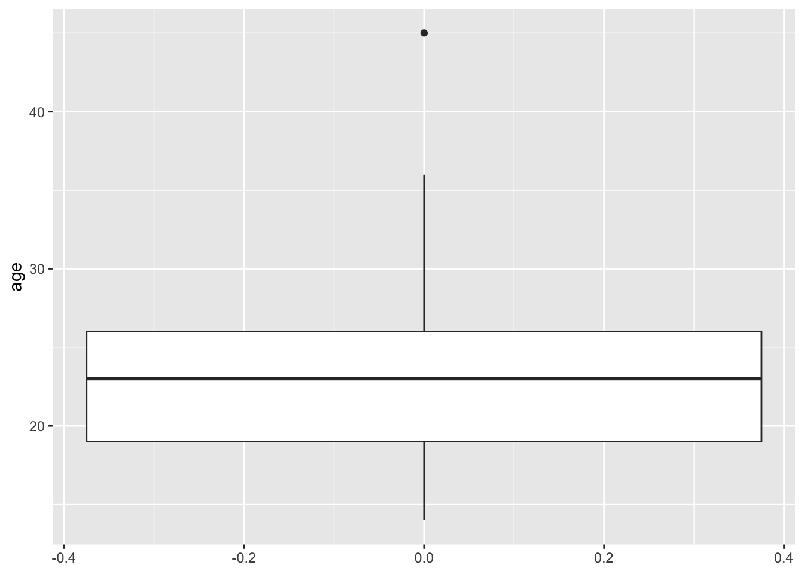

library(tidyverse)
# read data
low_birth <- read.csv("./lowbwt_ALL.csv")
# select relevant variables
low_birth <- dplyr::select(low_birth, age, race, smoke, bwt)
# change smoking status to a factor
low_birth <- mutate(low_birth,
smoke = ifelse(smoke == 1, "yes", "no"))Module 2- Descriptive Statistics
Descriptive Statistics
Numerical Summaries
We recommend the use of the package {gtsummary} for descriptive tables.
NOTE: you will need to install the {gtsummary} package. Run install.packages("gtsummary") in the Console.
# install and load gtsummary
# install.packages("gtsummary")
library(gtsummary)
# create overall summary table
low_birth %>%
tbl_summary(missing_text = "(Missing)", # counts missing values
statistic = list(all_continuous() ~ "{mean} ({sd})"), # what to do with continuous variables
label = list(age ~ "Age", # label variables
race ~ "Race",
smoke ~ "Smoking Status",
bwt ~ "Birth Weight")) %>%
bold_labels() %>%
italicize_levels() | Characteristic | N = 1891 |
|---|---|
| Age | 23 (5) |
| Race | |
| black | 26 (14%) |
| other | 67 (35%) |
| white | 96 (51%) |
| Smoking Status | 74 (39%) |
| Birth Weight | 2,945 (729) |
| 1 Mean (SD); n (%) | |
# create summary table by smoking status
low_birth %>%
tbl_summary(by = "smoke", # stratify by smoking status
missing_text = "(Missing)",
statistic = list(all_continuous() ~ "{mean} ({sd})"),
label = list(age ~ "Age",
race ~ "Race",
smoke ~ "Smoking Status",
bwt ~ "Birth Weight")) %>%
bold_labels() %>%
italicize_levels() | Characteristic | no, N = 1151 | yes, N = 741 |
|---|---|---|
| Age | 23 (5) | 23 (5) |
| Race | ||
| black | 16 (14%) | 10 (14%) |
| other | 55 (48%) | 12 (16%) |
| white | 44 (38%) | 52 (70%) |
| Birth Weight | 3,055 (752) | 2,773 (660) |
| 1 Mean (SD); n (%) | ||
Graphical Summaries
We can also describe this data with plots.
### bar graph of race using base R
# first you need to create a summary table
low_birth_race_summary <-
low_birth %>%
group_by(race) %>%
summarise(count = n())
# view summary table
low_birth_race_summary# A tibble: 3 × 2
race count
<chr> <int>
1 black 26
2 other 67
3 white 96# plot the barplot using the summary table
barplot(height = low_birth_race_summary$count,
names = low_birth_race_summary$race)### bar graph of race using ggplot
ggplot(low_birth) +
geom_bar(aes(x = race))
### histogram of birth weight using base R
hist(low_birth$bwt,
main = "Histogram of Birth Weight",
xlab = "Birth Weight (g)")### histogram of birth weight using ggplot
ggplot(low_birth) +
geom_histogram(aes(x = bwt), bins = 12) + # we can choose an appropriate number of bins
labs(title = "Histogram of Birth Weight",
x = "Birth Weight (g)")### boxplot of age using base R
boxplot(low_birth$age)
### boxplot of age using ggplot
ggplot(low_birth) +
geom_boxplot(aes(y = age))